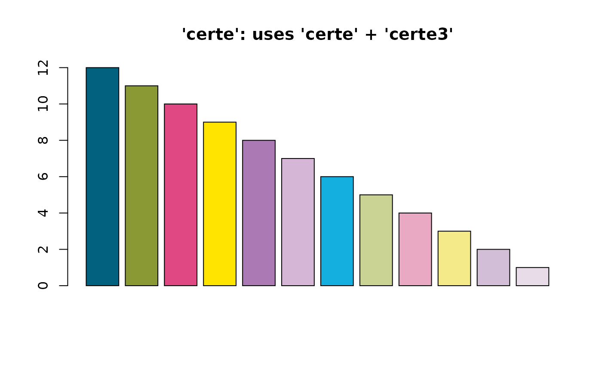
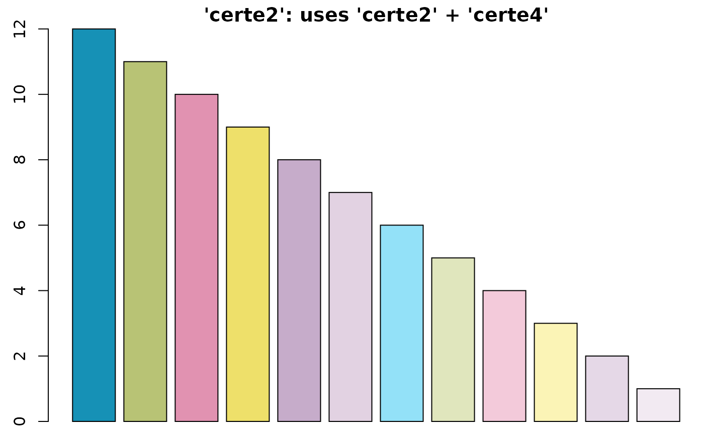
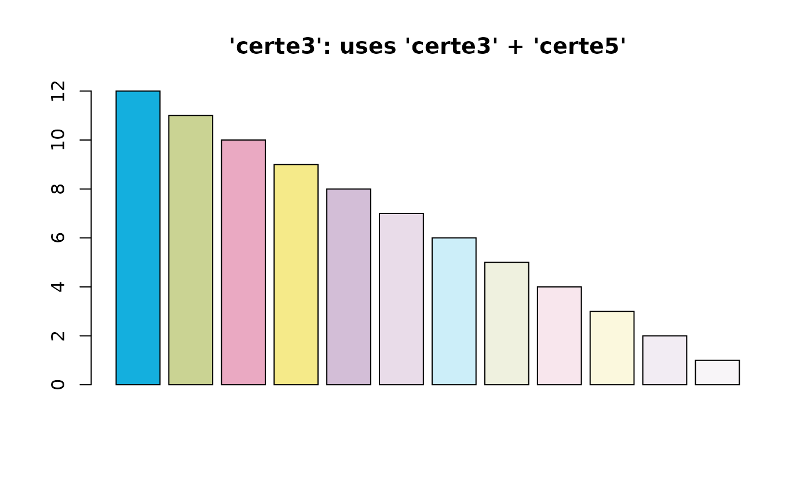
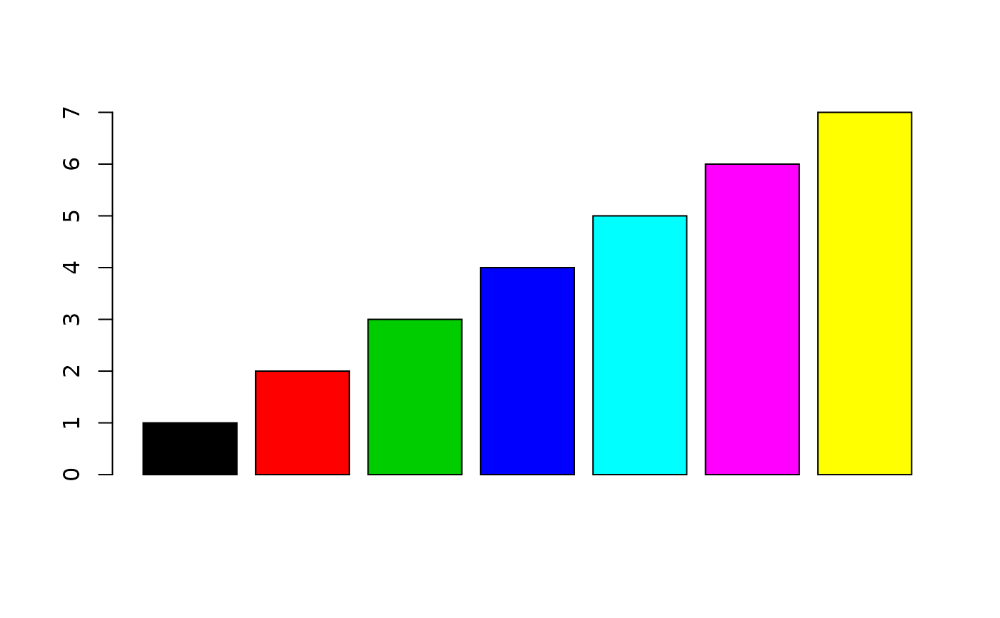
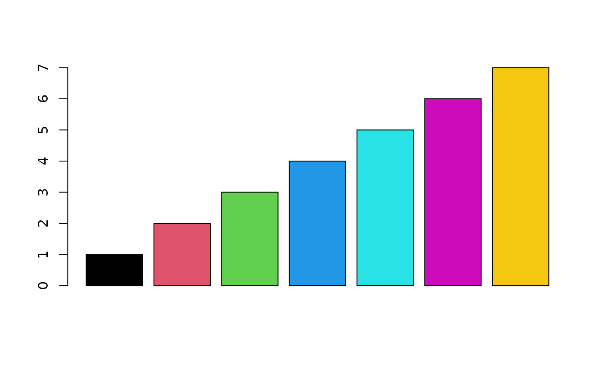

Colours from R, Certe, viridis and more. The output prints in the console with the actual colours.
colourpicker(x, length = 1, opacity = 0, ...)
# S3 method for colourpicker
as.character(x, ...)
# S3 method for colourpicker
print(x, ...)
add_white(x, white)colour or colour palette name. Certe colours will be used from the certe.colours object. Input can be:
"certe"
"certe0" to "certe6" (higher numbers give lighter colours)
"certeblauw", "certegroen", "certeroze", "certegeel", "certelila", or "certezachtlila" (or any of these followed by a 0 to 6)
"certe_rsi" or "certe_rsi2" for certeroze/certegeel/certegroen (will always return length 5, with names "S", "SI", "I", "IR", "R")
One of the colourblind-safe viridisLite palettes:
"viridis"
"magma"
"inferno"
"plasma"
"cividis"
"rocket"
"mako"
"turbo"
One of the built-in palettes in R (currently R 4.1.2):
"R3"
"R4"
"ggplot2"
"Okabe-Ito"
"Accent"
"Dark 2"
"Paired"
"Pastel 1"
"Pastel 2"
"Set 1"
"Set 2"
"Set 3"
"Tableau 10"
"Classic Tableau"
"Polychrome 36"
"Alphabet"
"topo"
"heatmap"
"rainbow"
"terrain"
"greyscale"
"grayscale"
One of the 657 built-in colours() in R, such as "chartreuse4", "deepskyblue4", "sienna3", "slateblue3", "springgreen3"
size of the vector to be returned
amount of opacity (0 = solid, 1 = transparent)
not used at the moment
number between [0, 1] to add white to x
character vector in HTML format (i.e., "#AABBCC") with new class colourpicker
Certe colours will be chosen as divergent as possible if the required output length is not too high. For example:
x = "certe" tries to only return the "certe" colours ("certeblauw", "certegroen", ...), the "certe3" colours ("certeblauw3", "certegroen3", ...) and the "certe5" colours ("certeblauw5", "certegroen5", ...)
x = "certe2" tries to only return the regular "certe2" colours ("certeblauw2", "certegroen2", ...), the "certe4" colours ("certeblauw4", "certegroen4", ...) and the "certe6" colours ("certeblauw6", "certegroen6", ...)
x = "certe3" tries to only return the "certe3" colours ("certeblauw3", "certegroen3", ...) and the "certe5" colours ("certeblauw5", "certegroen5", ...)
colourpicker("certegroen")
#> [1] "#8B9934"
colourpicker("certe", 5)
#> [1] "#01617E" "#8B9934" "#E04883" "#FFE400" "#AB79B3"
colourpicker(c("certeblauw", "red", "tan1", "#ffa", "FFAA00"))
#> [1] "#01617E" "#FF0000" "#FFA54F" "#FFFFAA" "#FFAA00"
par(mar = c(0.5, 2.5, 1.5, 0)) # set plot margins for below plots
# Certe colours
barplot(12:1,
col = colourpicker("certe", 12),
main = "'certe': uses 'certe' + 'certe3'")

barplot(12:1,
col = colourpicker("certe2", 12),
main = "'certe2': uses 'certe2' + 'certe4'")

barplot(12:1,
col = colourpicker("certe3", 12),
main = "'certe3': uses 'certe3' + 'certe5'")

# all colourblind-safe colour palettes from the famous viridisLite package
barplot(1:7,
col = colourpicker("viridis", 7))

barplot(1:7,
col = colourpicker("magma", 7))
